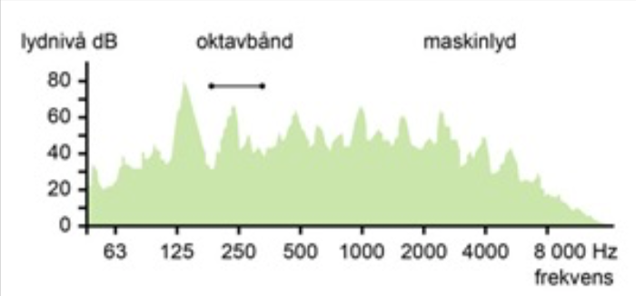

Lyd
Lyd er kjappe endringer av trykk, altså kalla lydbølge. lyd kan spreie seg i både vatn og faste stoff, men til vanlge er det lyd som spreier seg i luft vi har å gjerer med, den lyden kan vi høyre. skal vi lagre og behandle lyd i ein datamaskin, må lydsignalet digitaliserast. Det må alstå gjerast om til tal. Lydsignalet i eit analogt lydopptak er endringar i spenning over tid. spenninga kan vi måle. du kan vise spenninga grafisk med tida langs x-aksen og spenninga oppover langs y-aksen. når som helst kan du gå inn og måle for så å talfeste spenninga.
